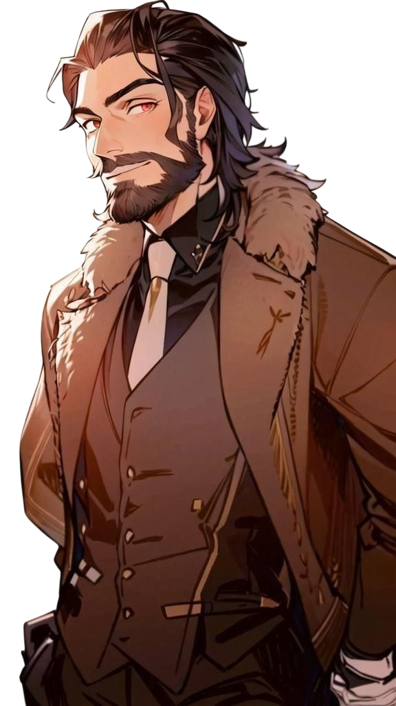
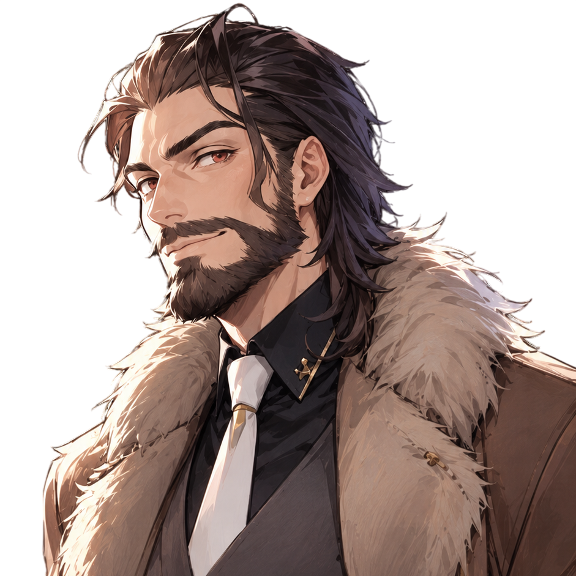
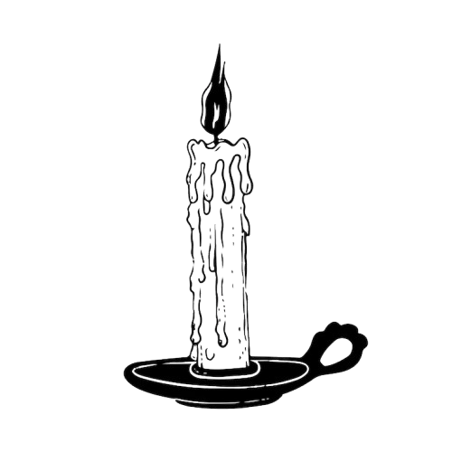

Afin de faciliter la compréhension de l'arborescence de cette famille, Veuillez cliquer sur l'image pour accéder à l'arbre généalogique de la famille Hogoki.

Nom : Hogoki.
Prénom : Olivier.
Origines Anglo-Japonais.
Age : 38 Ans.
Date de Naissance : 25 Aout 1987.
Matières : Etude des Moldu / SCM / Sortilèges .

Bois de Baguette : Bois de Houx.
Coeur de Baguette : Ventricule de Dragon.
Taille de Baguette : 27.8 cm.
Rigidité de Baguette : Rigide.

Apparence Physique :
Il arbore des cheveux noirs mi-longs qu'il coiffe principalement vers l'arrière, une barbe soignée, ainsi que des yeux perçants d'une couleur marron aux nuances légèrement rougeâtres.
Il mesure 1 m 85 et possède une carrure aux épaules larges, tout en conservant une allure détendue.
Son style vestimentaire est simple, confortable, avec une subtile touche d'élégance. Selon lui, un professeur doit garder une certaine prestance face à ses élèves, sans toutefois paraître intimidant.

Personnalité :
C’est un homme ouvert d’esprit, chaleureux et attentif aux besoins de ses élèves. Très apprécié pour sa capacité d’écoute, il instaure aisément un climat de confiance en classe. À la fois flexible et rigoureux, il exige un certain sérieux tout en accordant régulièrement à ses élèves des moments de détente.
Doté d’un côté taquin, il aime glisser occasionnellement une petite plaisanterie pour détendre l’atmosphère et rendre les situations plus agréables.
Philosophe dans l’âme, il privilégie les discussions approfondies et respectueuses, stimulant ainsi la réflexion et l’ouverture d'esprit.
Protecteur, il place le bien-être et la sécurité de ses élèves au cœur de ses priorités. Tourné vers l’avenir, il ne cache pas les grands espoirs qu’il place en ses élèves, qu’il considère comme l’avenir de la communauté magique, ainsi qu'il aime à le répéter.
Il sait néanmoins se montrer ferme lorsque cela est nécessaire, considérant les punitions comme un moyen juste et efficace pour faire comprendre leurs erreurs aux élèves, sans jamais en abuser.

Compétences :
- Autoritaire : Il sait s’imposer auprès des élèves récalcitrants afin de leur faire comprendre leurs erreurs.
- Juste : Il ne privilégie aucun élève en particulier, et applique toujours des sanctions appropriées.
- Adaptable : Il ajuste sa méthodologie selon les besoins spécifiques de chacun, pouvant également dépanner ses collègues si nécessaire.
- Ouvert d'esprit : Il accueille favorablement les critiques constructives et l’argumentation, estimant qu'il apprend davantage de ses erreurs que de ses réussites.
- Attentif : Il se montre toujours disponible et prêt à écouter les élèves ayant besoin de soutien ou de dialogue.

Objectifs :
- Offrir un environnement sain et propice à l'apprentissage ainsi qu'à l'épanouissement des élèves.
- Apporter son aide à ses collègues comme à ses élèves, quelle que soit la situation.
- Fournir un soutien moral et rassurant en ces temps troublés.
- Maintenir une discipline efficace au sein de la maison dont il pourrait avoir la charge.

Histoire :
Cette histoire possède un passé. Vous le trouverez dans les section concernant "L'ancêtre" et "Les Hogoki".
Olivier Hogoki

Olivier Hogoki est né dans une famille moldue modeste et aimante. Élevé par un père menuisier, qui lui transmit le respect et le goût de l’entraide, et une mère attentionnée, qui lui apprit la compassion et l’écoute, il passa une enfance paisible, entouré de ses parents et de sa petite sœur Jane, qu’il s’était promis de protéger.

Mais en grandissant, Olivier remarqua d’étranges phénomènes autour de lui : des objets qui bougeaient, des portes qui claquaient sous le coup de la colère et, un jour d’orage, une bougie qui s’alluma spontanément pour rassurer sa sœur. Ces événements, aussi inexplicables qu’inquiétants, trouvèrent leur réponse quelques jours avant ses onze ans, lorsqu’un représentant du monde magique lui révéla qu’il était un sorcier.

Après avoir découvert l’existence de la magie et reçu sa lettre d’admission à Poudlard, Olivier, soutenu par ses parents malgré ses craintes, se prépara à entamer une nouvelle vie. Si Jane éprouvait une certaine jalousie à l’idée de voir son frère partir, elle savait déjà combien il allait lui manquer. C’est ainsi qu’Olivier monta à bord du Poudlard Express, prêt à découvrir le monde magique et à comprendre sa véritable nature.
Aurore Hogoki

Années d'études à Poudlard
Résumé sur Aurore

Début de étude puis carrière en tant que prof

Arrivée de Girah

Vie actuelle, départ pour devenir professeur à Poudlard
Retour